Loading...


Repetitio (brevis): Twierdzenie o schematach
Twierdzenie o schematach mówi, że liczba Nξ (t+1) schematów ξ w pokoleniu t+1 dana jest zależnością:
| E { N ξ ( t + 1 ) } ≥ N ξ ( t ) |
| [1 − Dc ( ξ ) ][1 − Dm ( ξ )] |
| Dc (ξ) = pc |
|
| Dm (ξ) = 1 - (1 - pm)O(ξ) |
| Dm (ξ) = 1 - (1 - pm)O(ξ) |
może być dobrze aproksymowane przez
| Dm (ξ) ≈ pmO(ξ) |
| E{N (t+1)} ≥ N (t) |
|
[ 1 - pc |
|
][1 - pmO (ξ)] |
Repetitio (brevis): Twierdzenie o schematach
N - ilość wejść
M - ilość wyjść
R - ilość warstw
L - ilość wzorców uczących
Ni - ilość neuronów warstwy i-tej (NR = M)
x(j) - j-ty wektor wejściowy
y(j) - j-ty wektor wyjściowy
d(j) - j-ty oczekiwany wektor wyjściowy
Oj(l)R - sygnał na wyjściu j-tego neuronu R-tej warstwy (R = 1..NR) po podaniu l -tego wzorca (l= 1..L)
E - całkowity błąd sieci po podaniu wszystkich wzorców uczących
E(l) - całkowity błąd sieci po podaniu l-tego wzorca uczącego
Em(l) - błąd po podaniu l-tego wzorca uczącego dla m-tego wyjścia
η - współczynnik uczenia
Dany jest ciąg uczący postaci:
Wówczas:
Gdzie:
Uczenie sieci jest minimalizacją błędu E, w której zmiennymi niezależnymi są wagi wij
Ponieważ nawet najprostsze sieci mają bardzo dużo wag jest to proces minimalizacji pola skalarnego nad przestrzenią wektorową o setkach (tysiącach) wymiarów.
Do minimalizacji błędu E wykorzystujemy gradientową metodę największego spadku
Zgodnie z nią:
Z powyższego wzoru wynika, że zmiany wag dokonujemy po podaniu całego zestawu wzorców. Często jednak, dla uproszczenia algorytmu, rezygnujemy z tego warunku zmieniając wagi po podaniu każdego wzorca, odpowiednio zmniejszając η. Zatem:

Ponieważ błąd generowany przez sieć nie zależy bezpośrednio od wag lecz od wyjść poszczególnych neuronów, te zaś dopiero zależą od wag, zatem:
Ponieważ:
Zatem:
Oraz:
Zdefiniujmy tzw. uogólnioną deltę jako:
Wówczas:
Znaczenie uogólnionej delty danego neuronu uzależnione jest od położenia rozważanego neuronu
Dla warstwy wyjściowej:
Zatem:
Obliczamy uogólnione delty dla neuronów wyjściowych:
Obliczamy uogólnione delty dla kolejnych (licząc od ostatniej do pierwszej) warstw ukrytych:
Dokonujemy modyfikacji wag według:
